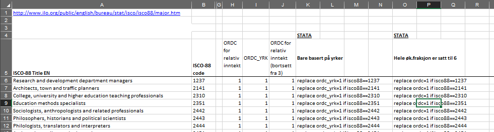

library(haven) # Importere data fra SAS, SPSS og Stata
library(tidyverse) # Pakker for generell datahåndtering og grafikk
library(labelled) # Håndtering av variable med labler, importert fra annen software
library(forcats) # Lettere omkoding av faktorvariable
library(gtsummary)15 Omkoding av variable
I denne delen skal vi bruke et uttrekk NorLAG som ikke er ryddet skikkelig i forkant. Kategoriske variable er riktignok gjort om til factor-variable, men det er beholdt ulike typer missing-verdier som vi ellers ville luket bort.
Rows: 20,892
Columns: 2
$ iokjonn <fct> Mann, Mann, Kvinne, Kvinne, Kvinne, Kvinne, Kvinne, Kvinne, Kv…
$ wr117zz <fct> NA, filter: ikke i arbeid, filter: jobber deltid, filter: jobb…15.2 Kontinuerlige variable
Å omkode kontinuerlige variable er i utgangspunktet det enkleste. Dette er tall og man kan gjøre normale regneoperasjoner på dem.
15.3 Tekstvariable (strings)
15.4 Factorvariable
R har en egen variabeltype for kategoriske variable som kalles “factor”. I utgangspunktet er kategoriske variable mer å regne som tekstvariable enn som tall, men i en del beregninger vil softwaren bruke numeriske verdier uansett. Hvis man gjør om en tekst-variabel til en factor-variabel beholdes teksten, men kategoriene numeriske verdier 1, 2, 3, … osv. Disse tallene kan du tenke på som rekkefølgen på kategoriene. For kategoriske variable er det jo ikke noen egentlig rekkefølge, men det kan være grunner til å foretrekke rekkfølgen av andre grunner som vi kommer tilbake til.
Hvis variabelen er ordnet f.eks. på en skala fra 1 til 5 eller annen naturlig rekkefølge1, så kan man også angi dette.
15.4.1 Få oversikt over factor-levels med levels()
levels(norlag_ex$wr117zz)[1] "Nei"
[2] "Ja"
[3] "filter: jobber deltid"
[4] "filter: selvstendig næringsdrivende (NorLAG3 inkl frilanser/annet)"
[5] "filter: ikke i arbeid"
[6] "vil ikke svare"
[7] "vet ikke"
[8] "mangler data"
[9] "Deltok ikke i runden" 15.4.2 Enkel omkoding med fct_recode() og fct_collapse()
15.4.3 Endre rekkefølgen på faktorene med fct_reorder()
15.5 Betinget omkoding med ifelse() og case_when()
Du kan lære mer om effektiv håndtering av kategoriske variable med forcats-pakken, som er en del av “tidyverse”.
15.6 Factorvariable med skikkelig lang tekst
Når man omkoder en variabel må man skrive hele tekstverdien man ønsker endre, og det må være nøyaktig likt stavet. Særlig i survey-data vil disse tekststrengene kunne være lange og det gir jo større muligheter for å skrive feil og du kan få andre resultater enn forventet. Det kan også være vanskelig å finne feilen i lange tekststrenger! Så det er altså noe hærk. Kan man gjøre dette på en lurere måte? Minst mulig tårer? Ja, selvsagt.
Vi jobber normalt med factorvariable for kategoriske variable. I NorLAG er variabelen wr117zz svar på et spørsmål om “Mulighet for å redusert arbeidstid (deltid)”. Når denne variabelen er gjort om til factor kan man se hvilke verdier variabelen har med bruke av funksjonen levels() slik:
levels(norlag_ex$wr117zz)[1] "Nei"
[2] "Ja"
[3] "filter: jobber deltid"
[4] "filter: selvstendig næringsdrivende (NorLAG3 inkl frilanser/annet)"
[5] "filter: ikke i arbeid"
[6] "vil ikke svare"
[7] "vet ikke"
[8] "mangler data"
[9] "Deltok ikke i runden" table(norlag_ex$wr117zz)
Nei
1360
Ja
4146
filter: jobber deltid
1964
filter: selvstendig næringsdrivende (NorLAG3 inkl frilanser/annet)
1171
filter: ikke i arbeid
6238
vil ikke svare
9
vet ikke
382
mangler data
67
Deltok ikke i runden
0 La oss si at vi vil kode om slik at vi får en variabel som bare er om vedkommende har mulighet til å jobbe deltid eller ikke. De som allerede jobber deltid har jo åpenbart mulighet til det, så de skal kodes om til “Ja”. De andre kategoriene er egentlig grunner til at det mangler data, så de skal settes til NA. En mulighet er da å omkode som følger:
norlag_omkodet <- norlag_ex %>%
mutate(redarbtid = replace(wr117zz, wr117zz == "filter: jobber deltid", "Ja"),
redarbtid = replace(redarbtid, redarbtid == "filter: selvstendig næringsdrivende (NorLAG3 inkl frilanser/annet)", NA),
redarbtid = replace(redarbtid, redarbtid == "filter: ikke i arbeid", NA),
redarbtid = replace(redarbtid, redarbtid == "vil ikke svare", NA),
redarbtid = replace(redarbtid, redarbtid == "vet ikke", NA),
redarbtid = replace(redarbtid, redarbtid == "mangler data", NA),
redarbtid = replace(redarbtid, redarbtid == "Deltok ikke i runden", NA)) %>%
droplevels()
norlag_omkodet %>%
select(redarbtid) %>%
gtsummary::tbl_summary()| Characteristic | N = 20,8921 |
|---|---|
| redarbtid | |
| Nei | 1,360 (18%) |
| Ja | 6,110 (82%) |
| Unknown | 13,422 |
| 1 n (%) | |
Dette funker, men blir ganske mye tekst å skrive, og da kan man altså lett skrive feil. Husk at faktornivåene må angis helt nøyaktig slik de er skrevet! Merk at den siste funksjone, droplevels, bare fjerner faktor-levels som ikke er i bruk.
I output for faktor-levels angir klammeparentesen gir rekkefølgen på disse verdiene. Vi kan bruke denne informasjonen direkte i omkodingen for å unngå å skrive så veldig mye. Når man bruker levels() får man en vektor med verdier, og disse kan man altså henvise til med rekkefølgen. Her er et eksempel for bare å bytte ut de som jobber deltid til “Ja”:
norlag_omkodet <- norlag_ex %>%
mutate(redarbtid = replace(wr117zz, wr117zz == levels(wr117zz)[3], "Ja")) %>%
droplevels()Trikset her er altså å bruke levels og vise til hvilket nummer i rekkefølgen. Da unngår vi også faren for skrivefeil.
Vi vil også kode om alle de andre verdiene, nummer 4-9 til NA. Det kan vi gjøre på samme måte, men vi behøver ikke skrive en ny linje for hver verdi. Den logiske operatoren == kan man bruke når man skal sjekke om to verdier er like. Hvis vi skal se om en verdi er lik en av flere mulige kan vi bruke %in% og så en liste med verdier. levels gir en liste med verdier, så da kan vi angi den direkte og alle verdiene 4 til 9 ved å skrive 4:9. Samlet blir det da slik:
norlag_omkodet <- norlag_ex %>%
mutate(redarbtid = replace(wr117zz, wr117zz == levels(wr117zz)[3], "Ja"),
redarbtid = replace(redarbtid, redarbtid %in% levels(wr117zz)[4:9], NA)) %>%
droplevels()
memisc::codebook(norlag_omkodet$redarbtid)================================================================================
norlag_omkodet$redarbtid
--------------------------------------------------------------------------------
Storage mode: integer
Factor with 2 levels
Levels and labels N Valid Total
1 'Nei' 1360 18.2 6.5
2 'Ja' 6110 81.8 29.2
NA 13422 64.215.7 Spesielle problemstillinger ved veldig mange kategorier
For disse eksemplene skal vi bruke et litt annet datasett, nemlig et lite uttrekk fra European Social Survey. Her er det 3 variable: yrkeskode, kjønn og politisk interesse.
polit <- read.csv2("data/politics.csv", colClasses = "character")
glimpse(polit)Rows: 49,519
Columns: 3
$ isco08 <chr> "3333", "7122", "4221", "4311", "6130", "7212", "5131", "5223"…
$ gndr <chr> "1", "1", "2", "1", "2", "1", "1", "2", "1", "2", "1", "2", "1…
$ polintr <chr> "3", "2", "4", "3", "2", "2", "4", "3", "3", "4", "2", "2", "1…Vi kan sjekke hvor mange kategorier det er ved å lage en tabell over kodene og se hvor mange det er. Det er imidlertid upraktisk da den tabellen tar veldig mye plass. Koden nedenfor gjør en enklere opptelling ved å trekke ut unike verdier og telle hvor mange det er:
antall_koder <- polit %>%
pull(isco08) %>% # trekker ut en vektor med kun en variabel
unique() %>% # beholder kun unike verdier
length() # lengden på gjenværende vektor
antall_koder[1] 561Det er altså 561 unike yrkeskoder i datasettet.
15.7.1 Hierarkisk strukturerte tall som tekststrenger
Noen ganger er det hundrevis av verdier. Et slik eksempel er yrkesklassifisering der hver type yrke har en spesifikk kode. Det finnes mange typer yrker, så det er omlag 800 koder. For de fleste typer analyser er dette altfor detaljert og du trenger å gruppere til færre kategorier. SSB har en kodeliste offentlig tilgjengelig. Kort fortalt er det en kode med 4 siffer, der det første sifferet er en grov gruppering, og de etterfølgende sifrene innebærer en økt detaljeringsgrad innenfor grupperingen angitt ved første siffer.
Hvis du skulle omkodet yrker slik som forklart i et tidligere avsnitt om omkoding ville det tatt veldig lang tid, men det ville også være veldig lett å gjøre feil. Det vil rett og slett være et mareritt å de-bugge koden for å finne feil eller kvalitetssjekke. Altså: en slik tilnærming er helt uaktuelt. En langt bedre tilnærming er å bare trekke ut det første sifferet fra koden. Funksjonen str_sub() gjør akkurat slike ting ved å angi hvilken del av tekststrengen du vil trekke ut, angitt ved posisjonen du starter ved og slutter ved. Her er det altså første posisjon.
polit <- polit %>%
mutate(occupation = str_sub(isco08, start = 1, end = 1))
polit %>%
select(gndr, occupation) %>%
tbl_summary(by = gndr)| Characteristic | 1, N = 23,0201 | 2, N = 26,4991 |
|---|---|---|
| occupation | ||
| 1,847 (8.0%) | 2,947 (11%) | |
| 0 | 5 (<0.1%) | 1 (<0.1%) |
| 1 | 2,185 (9.5%) | 1,350 (5.1%) |
| 2 | 3,665 (16%) | 5,018 (19%) |
| 3 | 2,736 (12%) | 3,250 (12%) |
| 4 | 1,071 (4.7%) | 2,862 (11%) |
| 5 | 2,418 (11%) | 5,569 (21%) |
| 6 | 704 (3.1%) | 445 (1.7%) |
| 7 | 4,162 (18%) | 1,158 (4.4%) |
| 8 | 2,495 (11%) | 966 (3.6%) |
| 9 | 1,732 (7.5%) | 2,933 (11%) |
| 1 n (%) | ||
15.7.2 Bruke kataloger for kodeverk
Noen ganger har slike lange lister med unike koder en standard gruppering som ikke er hierarkisk, eller man ønsker å lage en annen type gruppering av andre grunner. Et slikt eksempel er gruppering av yrker etter klasseskjemaer, slik som f.eks. ORDC class schema utviklet av HISTCLASS-prosjektet. Dette er et kodeskjemae for isco-koder til klasser og en katalog er tilgjengelig fra prosjektets hjemmeside. Det er omtrent 800 unike verdier og de er lagret i et Excel-format med gruppering for hver kode. De første linjene i arket ser ut som følgende:

Dette Excel-arket er også lagt til rette for omkoding med bruk av Stata, men du kan se bort fra de siste kolonnene.
Filen kan leses inn med read_excel(), der første linje typisk leses inn som variabelnavn. Men i dette tilfellet skal ikke de første linjene brukes og flere kolonner skal heller ikke brukes. Derfor ber vi R droppe de første linjenene, endrer variabelnavn og beholder kun isco-kodene og tilhørende ORDC-grupperingen. Variabelnavn bør ikke inkludere mellomrom, så vi legger til et argument som endrer til gyldige variabelnavn ved å bytte ut mellomrom med punktum. Vi også spesifiserer col_types = "text" for å unngå at tallverdier tolkes som numeriske verdier.
list.files("data/") [1] "3_codes_isco88_ordc.xlsx" "abu89.dta"
[3] "CODES_isco88_ordc.xlsx" "dat_dict.rds"
[5] "ESS2016.dta" "ESS2016.rds"
[7] "ISCO_ORDC.do" "norlag.rds"
[9] "norlag_labelled.rds" "norlag_panel.csv"
[11] "norlag_panel.dta" "norlag_panel.Rdata"
[13] "norlag_panel.rds" "norlag_panel.sas7bdat"
[15] "norlag_panel.sav" "norlag_panel.xlsx"
[17] "norlag_panel2022.dta" "ordc.ado"
[19] "ordc.sthlp" "politics.csv" isco <- readxl::read_excel(path = "data/CODES_isco88_ordc.xlsx", skip = 4, .name_repair = "universal", col_types = "text") %>%
select(2,9)
head(isco)# A tibble: 6 × 2
ISCO.88.code ORDC_YRK
<chr> <chr>
1 1237 1
2 2141 1
3 2310 1
4 2351 1
5 2442 1
6 2443 1 Now, we can merge the data with this catalogue. So that every record in the catalogue is merged to each record with the same code. To do this, we use left_join(), and store in a new object.
isco <- isco %>%
rename(isco08 = ISCO.88.code)
polit2 <- left_join(polit, isco, by = "isco08")
head(polit2) isco08 gndr polintr occupation ORDC_YRK
1 3333 1 3 3 <NA>
2 7122 1 2 7 10
3 7122 1 2 7 10
4 4221 2 4 4 8
5 4311 1 3 4 <NA>
6 6130 2 2 6 12What happened here is that the recoding happened almost automatically by adding a new column with the new variable.
Now, you can make e.g. a cross-tabulation of social class by gender.
polit2 %>%
select(ORDC_YRK, gndr) %>%
tbl_summary(by = gndr)| Characteristic | 1, N = 29,2851 | 2, N = 33,9501 |
|---|---|---|
| ORDC_YRK | ||
| 1 | 448 (2.4%) | 364 (2.0%) |
| 10 | 5,887 (32%) | 3,222 (17%) |
| 11 | 3,757 (20%) | 5,563 (30%) |
| 12 | 1,222 (6.6%) | 1,187 (6.4%) |
| 2 | 1,367 (7.4%) | 1,333 (7.1%) |
| 3 | 30 (0.2%) | 13 (<0.1%) |
| 4 | 561 (3.0%) | 1,251 (6.7%) |
| 5 | 2,000 (11%) | 2,669 (14%) |
| 6 | 1,681 (9.1%) | 1,850 (9.9%) |
| 7 | 180 (1.0%) | 267 (1.4%) |
| 8 | 1,129 (6.1%) | 726 (3.9%) |
| 9 | 134 (0.7%) | 105 (0.6%) |
| 996 | 84 (0.5%) | 109 (0.6%) |
| 997 | 5 (<0.1%) | 1 (<0.1%) |
| Unknown | 10,800 | 15,290 |
| 1 n (%) | ||
15.7.3 Noen ganger finnes det en pakke
Siden R støtter pakker laget av brukere rundt omkring i verden, så er det alltids en sjanse for at noen har laget noe lurt som fikser akkurat ditt problem. Du kan altså ha flaks.
Når det gjelder omkoding av ISCO-koder til klasseskjemaer, så har noen faktisk gjort dette. Pakken {DIGCLASS} koder om til flere forskjellige klasseskjemaer ganske greit. Se gjerne nærmere på vignetten til pakken.
Denne pakken finnes imidlertid ikke på CRAN i skrivende stund. Derimot finnes den tilgjengelig på nettet. Følgende kode installerer pakken. Hvis du får feilmelding om at du trenger {devtools}, så installer denne pakken først på vanlig måte.
Denne pakken inneholder også funksjonen for å rydde opp i isco-kodene. Det er noen vanlige problemer som omkodes enkelt med repair_isco. I følgende kode sjekkes isco-kodene før funksjonen isco88_to_ordc brukes til selve omkodingen. Den har en versjon som gir tallkode og en som gir tekstverdier, som er kjekt, så da kjøres begge to.
Denne funksjonen spytter også ut mange beskjeder i output som vi strengt tatt ikke trenger. Den melder fra om alle verdier som ikke inngår i klasseskjemaet og som derfor settes til NA. Det er fint, men tar i dette tilfellet ganske mye plass. Vet å bruke funksjonen suppressMessages({...}) og parenteser rundt hele koden slipper vi dette. Normalt skal du ikke bruke denne funksjonen da du vanligvis vil ha slike beskjeder. Her tar det bare litt mye plass.
library(DIGCLASS)
suppressMessages({
polit3 <- polit %>%
mutate(isco08 = repair_isco(.$isco08),
orcd = isco88_to_ordc(isco08, label = FALSE),
orcd_lab = isco88_to_ordc(isco08, label = TRUE))
})
head(polit3) isco08 gndr polintr occupation orcd orcd_lab
1 3333 1 3 3 <NA> <NA>
2 7122 1 2 7 10 Skilled working class
3 4221 2 4 4 8 Lower-middle class: balanced
4 4311 1 3 4 <NA> <NA>
5 6130 2 2 6 12 Primary-sector employees
6 7212 1 2 7 10 Skilled working classDa kan vi lage tabellen omigjen bare for å sjekke at vi får samme svar.
polit3 %>%
select(orcd, gndr) %>%
tbl_summary(by = gndr)| Characteristic | 1, N = 23,0201 | 2, N = 26,4991 |
|---|---|---|
| orcd | ||
| 1 | 190 (1.6%) | 182 (1.6%) |
| 10 | 4,188 (36%) | 1,890 (17%) |
| 11 | 2,075 (18%) | 2,564 (23%) |
| 12 | 723 (6.2%) | 669 (6.0%) |
| 13 | 80 (0.7%) | 101 (0.9%) |
| 2 | 1,014 (8.7%) | 838 (7.5%) |
| 3 | 10 (<0.1%) | 2 (<0.1%) |
| 4 | 316 (2.7%) | 604 (5.4%) |
| 5 | 947 (8.1%) | 1,062 (9.5%) |
| 6 | 572 (4.9%) | 639 (5.7%) |
| 7 | 226 (1.9%) | 422 (3.8%) |
| 8 | 1,137 (9.8%) | 1,882 (17%) |
| 9 | 167 (1.4%) | 333 (3.0%) |
| Unknown | 11,375 | 15,311 |
| 1 n (%) | ||
```
15.8 Gjøre samme ting med mange variable med across()
Noen ganger kalles slike variable å være på “ordinalnivå”↩︎